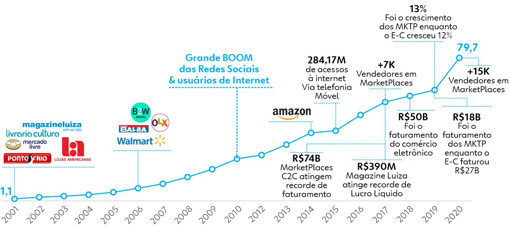

Essa sou eu...
Beatriz Machado
Especializada em Marketplaces
Gerente de E-commerce
- Especializada em vendas online
- Atuo no mercado online há mais de 6 anos
- Experiência em criar lojas online do absoluto zero
- Especialização em estratégias de marketing digital
- Habilidade em gestão de equipes remotas e presenciais
- Proficiência nas principais plataformas de e-commerce do mercado nacional
- Domínio em análise de métricas e otimização de vendas
O que são os Marketplaces?
O marketplace é um modelo de negócio que ganhou força no Brasil em 2012, similar a um shopping virtual. Ele oferece vantagens para o consumidor reunindo diversas marcas e lojas em um só lugar, além de facilitar a procura pelos melhores preços e produtos.
Veja algumas das vantagens do comércio Online

Visibilidade
Qualquer comércio, de qualquer lugar pode ter a visibilidade em escala nacional ou global de seus produtos.

Tecnologia
Com infraestrutura pronta, você não precisa criar do zero um sistema de devolução ou relacionamento com o cliente, por exemplo.

Confiança
Um site tradicional, que possui uma boa conduta e protocolos de segurança reforça a confiança ao vender seus produtos.

Crescimento
Caso seu negócio já exista fisicamente, você está expandindo para um novo mercado de maneira praticamente gratuita.
A chegada e evolução do mercado digital
A chegada do e-commerce no Brasil, no início dos anos 2000, marcou o início de uma nova era no comércio varejista, trazendo inovação, conveniência e um acesso muito mais amplo para consumidores e empresas. Esse movimento pioneiro, embora ainda tímido, foi revolucionário, estabelecendo as bases para o crescimento acelerado do comércio digital. Com o avanço das tecnologias e a popularização da internet, o boom das redes sociais, que se consolidou cerca de uma década depois, desempenhou um papel fundamental nesse processo. Essas plataformas sociais não apenas conectaram pessoas, mas também criaram oportunidades de marketing digital, vendas interativas e maior engajamento entre marcas e consumidores. Todos esses fatores contribuíram significativamente para pavimentar o caminho do comércio brasileiro e preparar um terreno fértil para o surgimento e o sucesso dos marketplaces, que hoje desempenham um papel central na economia digital do país.
O boom dos Marketplaces no Brasil
Em 2017

Apenas 47% dos brasileiros já haviam feito uma compra na Amazon.
Porém
55%
Checavam o preço dos produtos na Amazon antes de comprar.
Em 2018

58%
Ainda não sabiam exatamente o que era um Marketplace.
“O modelo de marketplace ainda é pouco reconhecido pelos consumidores, que na maioria dos casos, percebem apenas que a compra foi realizada em uma loja parceira quando recebem o produto em casa.”
já em 2019
95%
Dos brasileiros que compram online já haviam feito alguma compra em um marketplace.
Esse dado reflete o crescimento constante da confiança dos usuários nas compras online. A familiaridade com o modelo de marketplace contribuiu para a aceitação do público, que passou a enxergar essas plataformas como uma alternativa prática e segura para adquirir produtos diversos.